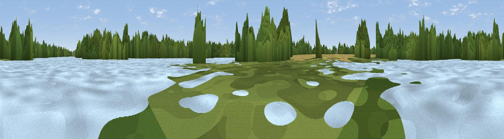

Viewpoint near Filby
#44744 in England · top 69% of its area beats it · near FilbyThe view, rendered

A 360° render of this exact spot computed from the terrain model, tree cover and land cover — summer colours, afternoon light, calibrated against photographs of famous viewpoints. Real trees, hedges and buildings will differ in detail.
The panorama
Grey silhouette: terrain skyline in each direction (720 bearings, Earth curvature and refraction included). Dashed green: skyline with trees (+15 m) and buildings (+8 m) as obstacles. Blue strip: how far the ground is visible on each bearing.
Where the view opens
Wedge length = distance to the farthest visible ground on that bearing (vegetation-aware). Rings at 10, 25 and 50 km.
What fills the view
35% water · 33% woodland · 23% cropland · 8% grassland ·
Angular shares of the visible panorama (visual magnitude), not map area. Landscape diversity 0.57 (0–1 Shannon).
Key numbers
More beautiful places nearby
The staircase of upgrades: each row has a higher view potential than everything closer. Driving times are estimates from straight-line distance, calibrated against real road routing — check an actual route before setting out.
| Place | Direction | Drive | Score |
|---|---|---|---|
| Horsey Mere | N · 8 km | ~17 min | 28.8 |
| Viewpoint near Great Yarmouth | SE · 9 km | ~18 min | 33.4 |
| Strumpshaw Hill | WSW · 13 km | ~23 min | 34.5 |
| Viewpoint near Paston | NNW · 26 km | ~41 min | 56.1 |
| Viewpoint near Mundesley | NNW · 26 km | ~43 min | 58.9 |
| Viewpoint near Trimingham | NNW · 30 km | ~47 min | 62.4 |
| Viewpoint near Sidestrand | NW · 33 km | ~51 min | 65.3 |
| Viewpoint near Overstrand | NW · 35 km | ~54 min | 67.5 |
52.66779, 1.64003 · source: osm viewpoint · position refined by local search. Computed location — check access rights before visiting.